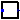

Package with models and functions that are used by other models
This package contains utility models and functions.
Extends from Modelica.Icons.Package (Icon for standard packages).
| Name | Description |
|---|---|
|  VoltageControl | Voltage controller |
| Package that contains state machines and control models used by the utilities | |
| This package contais tests for check the correctness of the models |
Voltage controller
Model representing a voltage controller that unplugs a load when its voltage is outside of the accepted thresholds.
The model contains a finite state machine controller that detects voltage
deviations. If the voltage input V exceeds the
nominal value V_nominal by more than 1+Vtr
then the control signal y becomes zero for
a period t = tDelay. If after this period the voltage is still
higher than the thresholds the output remains equal to zero.
The model has a parameter T that represents the time constant
associated to the electrical switch. This time constant is used to parametrize
a first order filter that represents such a dynamic effect. The presence of the first order
filter avoids that the output of the finite state machine controller
are differentiated (causing runtime errors).
| Type | Name | Default | Description |
|---|---|---|---|
| replaceable package PhaseSystem | Buildings.Electrical.PhaseSy... | Phase system | |
| Voltage | V_nominal | Nominal voltage of the node to be controlled [V] | |
| Real | vThresh | 0.1 | Threshold that activates voltage ctrl (ratio of nominal voltage) |
| Time | tDelay | 300 | Time to wait before plugging the load back [s] |
| Time | T | 0.01 | Time constant representing the switching time [s] |
| Real | y_start | 1.0 | Initial value of the control output signal |
| Terminal | terminal | redeclare Buildings.Electric... | Generalized terminal |
| Type | Name | Description |
|---|---|---|
| replaceable package PhaseSystem | Phase system | |
| output RealOutput | y | Control signal |
| Terminal | terminal | Generalized terminal |